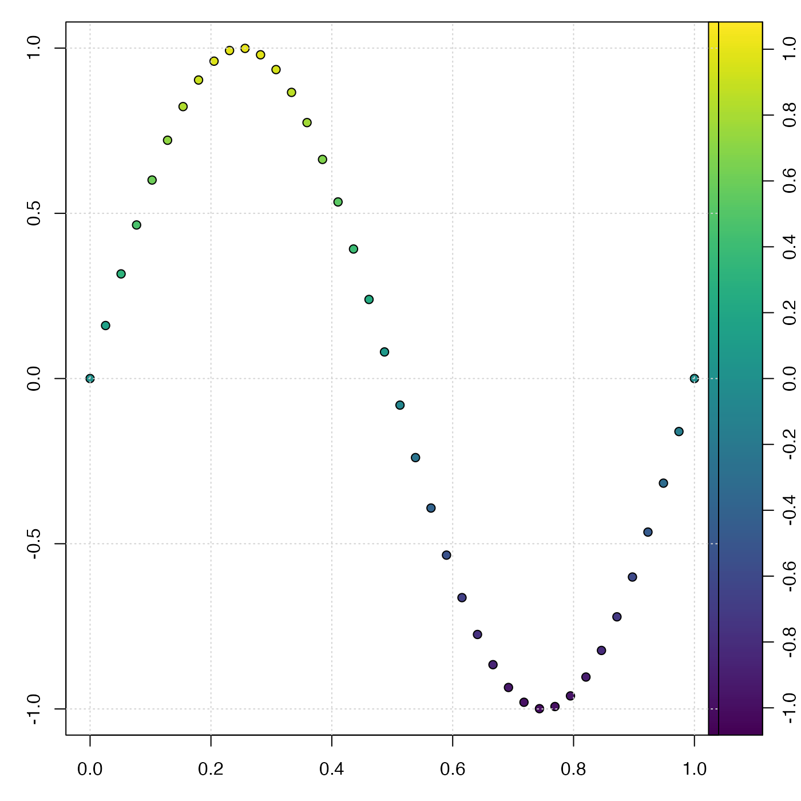

Map values to colors, for use in palettes and plots. There are many ways to use this function, and some study of the arguments should prove fruitful in cases that extend far beyond the examples.
colormap( z = NULL, zlim, zclip = FALSE, breaks, col = oceColorsViridis, name, x0, x1, col0, col1, blend = 0, missingColor, debug = getOption("oceDebug") )
Arguments
| z | an optional vector or other set of numerical values to be examined.
If |
|---|---|
| zlim | optional vector containing two numbers that specify the |
| zclip | logical, with |
| breaks | an optional indication of break points between color levels
(see |
| col | either a vector of colors or a function taking a numerical value
as its single argument and returning a vector of colors. Prior to 2021-02-08,
the default for |
| name | an optional string naming a built-in colormap (one of
|
| x0, x1, col0, col1 | Vectors that specify a color map. They must all be
the same length, with |
| blend | a number indicating how to blend colors within each band.
This is ignored except when |
| missingColor | color to use for missing values. If not provided, this
will be |
| debug | a flag that turns on debugging. Set to 1 to get a moderate amount of debugging information, or to 2 to get more. |
Value
A list containing the following (not necessarily in this order)
zcol, a vector of colors forz, ifzwas provided, otherwise"black"zlim, a two-element vector suitable as the argument of the same name supplied toimage()orimagep()breaksandcol, vectors of breakpoints and colors, suitable as the same-named arguments toimage()orimagep()zclipthe provided value ofzclip.x0andx1, numerical vectors of the sides of color intervals, andcol0andcol1, vectors of corresponding colors. The meaning is the same as on input. The purpose of returning these four vectors is to permit users to alter color mapping, as in example 3 in “Examples”.missingColor, a color that could be used to specify missing values, e.g. as the same-named argument toimagep(). If this is supplied as an argument, its value is repeated in the return value. Otherwise, its value is either"gray"or, in the case ofnamebeing given, the value in the GMT color map specification.colfunction, a univariate function that returns a vector of colors, given a vector ofzvalues; see Example 6.
Details
This is a multi-purpose function that generally links (``maps'') numerical
values to colors. The return value can specify colors for points on a
graph, or breaks and `col` vectors that are suitable for use by
drawPalette(), imagep() or image().
There are three ways of specifying color schemes, and colormap works
by checking for each condition in turn.
Case A. Supply
zbut nothing else. In this case,breakswill be set to[pretty](z,10)` and things are otherwise as in case B.Case B. Supply
breaks. In this case,breaksandcolare used together to specify a color scheme. Ifcolis a function, then it is expected to take a single numerical argument that specifies the number of colors, and this number will be set tolength(breaks)-1. Otherwise,colmay be a vector of colors, and its length must be one less than the number of breaks. (NB. ifbreaksis given, then all other arguments exceptcolandmissingColorare ignored.) The figure below explains the (`breaks`, `col`) method of specifying a color mapping. Note that there must be one more break than color. This is the method used by e.g. [image()].
Case C. Do not supply
breaks, but supplynameinstead. Thisnamemay be the name of a pre-defined color palette ("gmt_relief","gmt_ocean","gmt_globe"or"gmt_gebco"), or it may be the name of a file (including a URL) containing a color map in the GMT format (see “References”). (NB. ifnameis given, then all other arguments exceptzandmissingColorare ignored.)Case D. Do not supply either
breaksorname, but instead supply each ofx0,x1,col0, andcol1. These values are specify a value-color mapping that is similar to that used for GMT color maps. The method works by usingseq()to interpolate between the elements of thex0vector. The same is done forx1. Similarly,colorRampPalette()is used to interpolate between the colors in thecol0vector, and the same is done forcol1. The figure above explains the (`x0`, `x1`, `col0`, `col1`) method of specifying a color mapping. Note that the each of the items has the same length. The case of `blend=0`, which has color `col0[i]` between `x0[i]` and `x1[i]`, is illustrated below.
References
Information on GMT software is given at
http://gmt.soest.hawaii.edu (link worked for years but failed
2015-12-12). Diagrams showing the GMT color schemes are at
http://www.geos.ed.ac.uk/it/howto/GMT/CPT/palettes.html (link worked
for years but failed 2015-12-08), and numerical specifications for some
color maps are at https://beamreach.org/maps/gmt/share/cpt/,
http://soliton.vm.bytemark.co.uk/pub/cpt-city/, and other sources.
See also
Other things related to colors:
oceColors9B(),
oceColorsCDOM(),
oceColorsChlorophyll(),
oceColorsClosure(),
oceColorsDensity(),
oceColorsFreesurface(),
oceColorsGebco(),
oceColorsJet(),
oceColorsOxygen(),
oceColorsPAR(),
oceColorsPalette(),
oceColorsPhase(),
oceColorsSalinity(),
oceColorsTemperature(),
oceColorsTurbidity(),
oceColorsTurbo(),
oceColorsTwo(),
oceColorsVelocity(),
oceColorsViridis(),
oceColorsVorticity(),
ocecolors
Author
Dan Kelley
Examples
library(oce) ## Example 1. color scheme for points on xy plot x <- seq(0, 1, length.out=40) y <- sin(2 * pi * x) par(mar=c(3, 3, 1, 1)) mar <- par('mar') # prevent margin creep by drawPalette() ## First, default breaks c <- colormap(y) drawPalette(c$zlim, col=c$col, breaks=c$breaks) plot(x, y, bg=c$zcol, pch=21, cex=1)par(mar=mar) ## Second, 100 breaks, yielding a smoother palette c <- colormap(y, breaks=100) drawPalette(c$zlim, col=c$col, breaks=c$breaks) plot(x, y, bg=c$zcol, pch=21, cex=1)par(mar=mar) if (FALSE) { ## Example 2. topographic image with a standard color scheme par(mfrow=c(1,1)) data(topoWorld) cm <- colormap(name="gmt_globe") imagep(topoWorld, breaks=cm$breaks, col=cm$col) ## Example 3. topographic image with modified colors, ## black for depths below 4km. cm <- colormap(name="gmt_globe") deep <- cm$x0 < -4000 cm$col0[deep] <- 'black' cm$col1[deep] <- 'black' cm <- colormap(x0=cm$x0, x1=cm$x1, col0=cm$col0, col1=cm$col1) imagep(topoWorld, breaks=cm$breaks, col=cm$col) ## Example 4. image of world topography with water colorized ## smoothly from violet at 8km depth to blue ## at 4km depth, then blending in 0.5km increments ## to white at the coast, with tan for land. cm <- colormap(x0=c(-8000, -4000, 0, 100), x1=c(-4000, 0, 100, 5000), col0=c("violet","blue","white","tan"), col1=c("blue","white","tan","yellow")) lon <- topoWorld[['longitude']] lat <- topoWorld[['latitude']] z <- topoWorld[['z']] imagep(lon, lat, z, breaks=cm$breaks, col=cm$col) contour(lon, lat, z, levels=0, add=TRUE) ## Example 5. visualize GMT style color map cm <- colormap(name="gmt_globe", debug=4) plot(seq_along(cm$x0), cm$x0, pch=21, bg=cm$col0) grid() points(seq_along(cm$x1), cm$x1, pch=21, bg=cm$col1) ## Example 6. colfunction cm <- colormap(c(0, 1)) x <- 1:10 y <- (x - 5.5)^2 z <- seq(0, 1, length.out=length(x)) drawPalette(colormap=cm) plot(x, y, pch=21, bg=cm$colfunction(z), cex=3) }